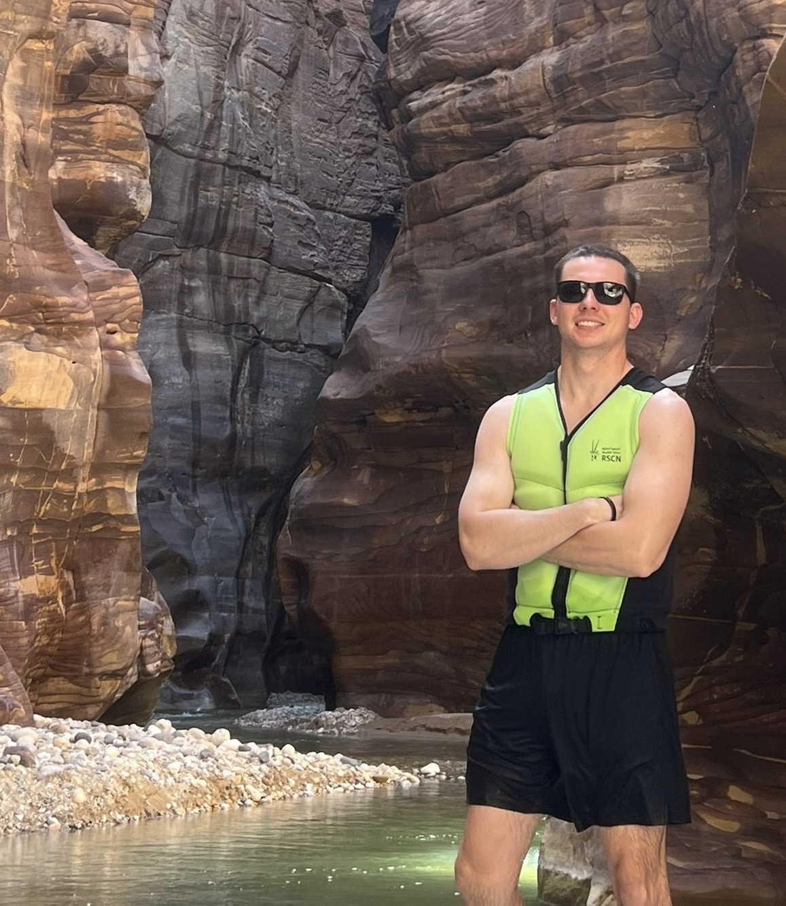

There is something deeply humbling about being out in nature, especially when you're staring at landscapes that look like they were created by pure chance or some obscure science. Today, I found myself thinking exactly that while visiting the Dead Sea, the Pink Lake, and the Mujib Nature Reserve. Getting to see just one of these spectacles would have been great, but hitting all three in a single day was an all-time highlight for me. I was in awe everywhere I looked, constantly wondering how the earth manages to create things like this.

Since this is a health and fitness log, I’m not just going to give you a travel brochure. I want to talk about the physical reality of experiencing these places, because days like today are exactly why we train.
Just getting to the water is a workout. You have to park a fair distance away, and the trek to see both the Pink Lake and the Dead Sea involves a solid hike up and down some steep, rugged terrain. Then there’s the Dead Sea itself. Getting in and moving around in a saline lake that is seven times saltier than the ocean is a bizarre, exhausting kind of physical exertion all on its own.
But the real highlight of the day was a two-hour trek through the Mujib Nature Reserve. This wasn't your average walking trail. It was a full-on obstacle course that involved hiking, swimming, and climbing through a canyon. It was honestly one of the most fun experiences you can have out here, perfectly blending an amazing location with a genuine physical challenge.
Of course, after putting out that kind of energy, you have to refuel properly. I ended the day at a restaurant in downtown Amman and filled up on a massive plate of fatteh and meat. It was incredible local food that happened to perfectly hit my protein and carb goals for the day.